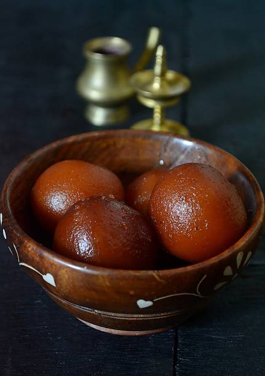

Gulab-Jamun
Ingredients
- 1.Khoya (Mawa)
- 2.All-purpose Flour (Maida)
- 3.Ghee
- 4.Sugar
- 5.Water
Recipe
- Preparing the Sugar Syrup: In a wide pan, combine the sugar and water. Heat the mixture over medium heat, stirring until the sugar dissolves completely. Once the sugar dissolves, add the cardamom powder, rose water, and saffron strands (if using). Allow the syrup to simmer on low heat for about 5-10 minutes. It should be slightly sticky but not too thick. Turn off the heat and set aside.
- Preparing the Gulab Jamun: In a mixing bowl, combine the milk powder, all-purpose flour, and baking soda. Add the ghee and mix well to form a crumbly mixture. Gradually add milk, a tablespoon at a time, and knead the mixture into a smooth, soft dough. Be careful not to add too much milk; the dough should be soft but not sticky. Divide the dough into small portions and roll them into smooth, crack-free balls. Ensure there are no cracks, as they can cause the Gulab Jamun to break while frying. Heat oil or ghee in a deep frying pan over medium-low heat. The oil should be hot but not smoking. To check, drop a small piece of dough into the oil; it should rise slowly to the surface. Gently slide the dough balls into the hot oil, a few at a time. Fry them on low heat, stirring occasionally to ensure even cooking. Fry the balls until they turn golden brown. This process should take about 5-7 minutes. Make sure the oil is not too hot, as the balls need to cook from the inside as well. Once golden brown, remove the balls from the oil using a slotted spoon and drain the excess oil on a paper towel.
- Soaking the Gulab Jamun: After a few minutes, while still warm, transfer the fried Gulab Jamun to the warm sugar syrup. Let the Gulab Jamun soak in the sugar syrup for at least 1-2 hours. They will expand and become soft as they absorb the syrup. Serve the Gulab Jamun warm or at room temperature, garnished with chopped nuts if desired.
Enjoy your delicious homemade Gulab Jamun!

Barfi
Ingredients
- 1.Orange
- 2.Besan
- 3.Ghee
- 4.Sugar
- 5.Water
Recipe
- Preparing the Sugar Syrup: In a wide pan, combine the sugar and water. Heat the mixture over medium heat, stirring until the sugar dissolves completely. Once the sugar dissolves, add the cardamom powder, rose water, and saffron strands (if using). Allow the syrup to simmer on low heat for about 5-10 minutes. It should be slightly sticky but not too thick. Turn off the heat and set aside.
- Preparing the Gulab Jamun: In a mixing bowl, combine the milk powder, all-purpose flour, and baking soda. Add the ghee and mix well to form a crumbly mixture. Gradually add milk, a tablespoon at a time, and knead the mixture into a smooth, soft dough. Be careful not to add too much milk; the dough should be soft but not sticky. Divide the dough into small portions and roll them into smooth, crack-free balls. Ensure there are no cracks, as they can cause the Gulab Jamun to break while frying. Heat oil or ghee in a deep frying pan over medium-low heat. The oil should be hot but not smoking. To check, drop a small piece of dough into the oil; it should rise slowly to the surface. Gently slide the dough balls into the hot oil, a few at a time. Fry them on low heat, stirring occasionally to ensure even cooking. Fry the balls until they turn golden brown. This process should take about 5-7 minutes. Make sure the oil is not too hot, as the balls need to cook from the inside as well. Once golden brown, remove the balls from the oil using a slotted spoon and drain the excess oil on a paper towel.
- Soaking the Gulab Jamun: After a few minutes, while still warm, transfer the fried Gulab Jamun to the warm sugar syrup. Let the Gulab Jamun soak in the sugar syrup for at least 1-2 hours. They will expand and become soft as they absorb the syrup. Serve the Gulab Jamun warm or at room temperature, garnished with chopped nuts if desired.
Enjoy your delicious homemade Barfi!